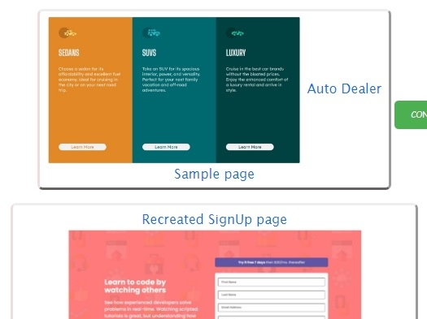

About Me
Oluwatoyin Akinselure goes simply by the name Toyin. Toyin is a Christian who loves God, by training she is a biological scientist who is passionate about protein research and drug discovery. By interest, Toyin is a growing frontend developer and graphics designer. She loves seeing ideas recreated digitally using graphics and frontend technologies. Toyin loves people and loves to spend time with loved ones.
Hobbies
she loves to travel and visit historic sites.
she loves
nature in general, blooming flowers, zoos, sunsets. she has an eye for nature.
On holidays, Toyin likes to visit beaches and parks. Museums too, to admire works of art, paintings, mosaics, sculptures,
carvings and pictures.
In her free time, she also loves to engage in insightful conversations.
Tech Goals
Toyin aims to become an expert in Frontend development.
Within the next 2 years, she plans to learn a new programming language, mastering ReactJs,and gain expertise in
writing Javascript. With these she aims to maintain a competitive edge in the tech industry and tackle complex
problems with state-of-the-art solutions
In the interconnected world of technology, building a robust professional network and fostering collaboration are vital. Due to this, Toyin plans to attend tech conferences, participate in web projects, contributing to open-source projects. By expanding her network and collaborating with others, she aims to enter doors to new opportunities and innovative ideas.
In her personal space, Oluwatoyin aims to include tech articles in her blog, speak at industry events and publish research on emerging technologies. She aims to ensure that she not only keeps pace with the rapid changes in Frontend development but also becomes a trailblazers who defines the direction of technology for years to come.
Toyin aims to take on more management and leadership roles, by showing eagerness to take on more responsibility she aims to become an even more significant asset to her company. When a leadership role opens, through communication and affinity for responsibility, she aims to stand out from her peers.
Toyin aims to pay more attention to details and be more thorough in her testing. Debuging She plans to participate in open-source projects where she can contribute to debug code.
Other Skills
To create publicity on some of the work I do in my freetime, I post to social media and to ensure that my work gets
found by persons interested in it, I use keywords as some sort of identifiers. Recently, I found a website,
keyword.dog
that could help me do this efficiently.
My tech journey is not one that I have been on alone, I've had learning partners such as Hng
for internship and several other walk with me on this journey.
I write articles which I share on my blog and for this, I research papers and website to gather information.
A web tool was recommended recently, scrapeanyweb. I can't say that I have used it however
it seems to be able to do a number of things.
Check out my Services
Website Development
Who said you had to break the bank to own a website? Build your website with me in a budget friendly fashion
